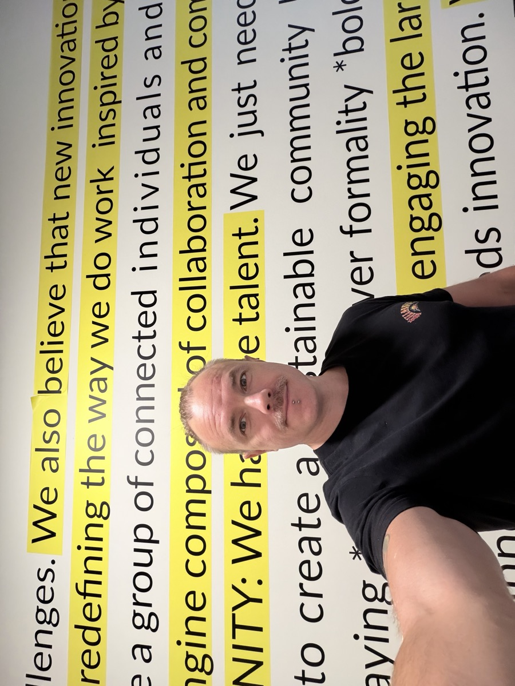
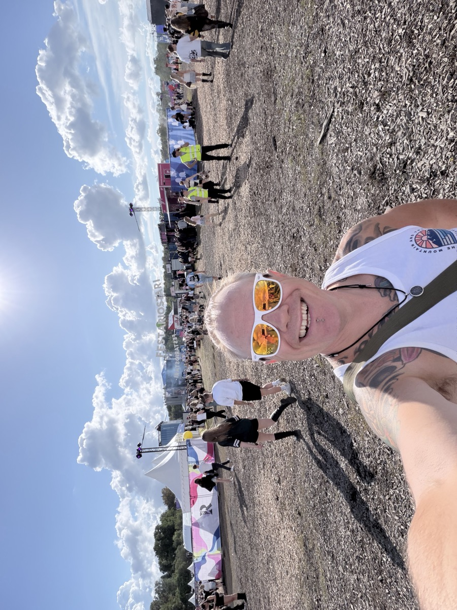
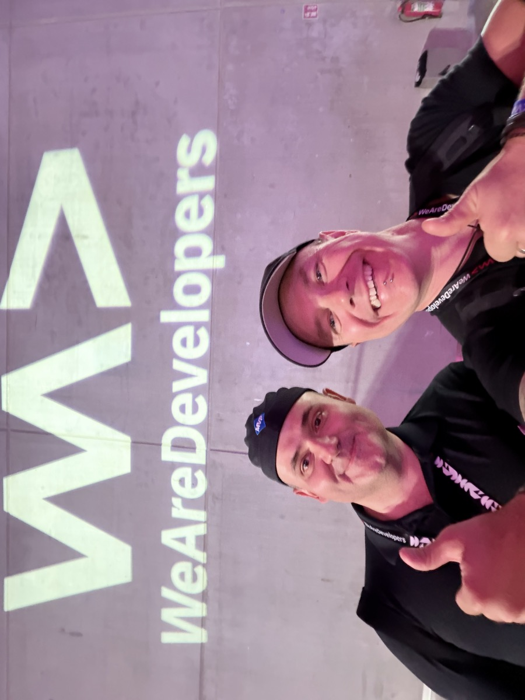
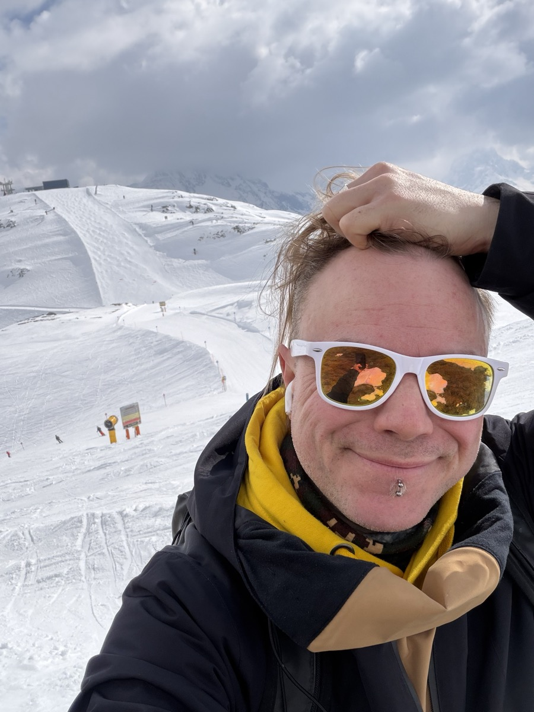
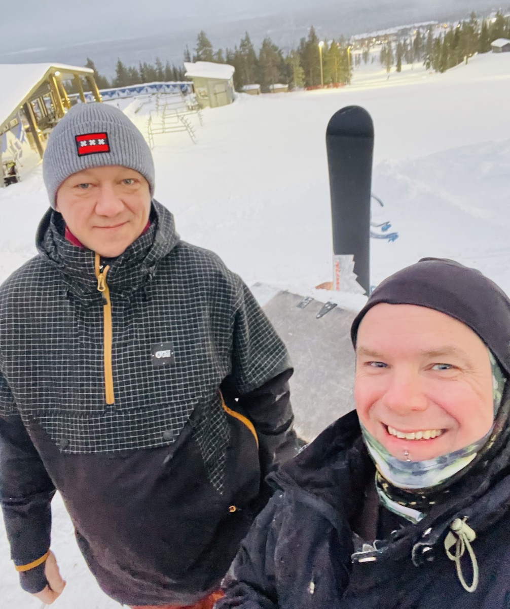
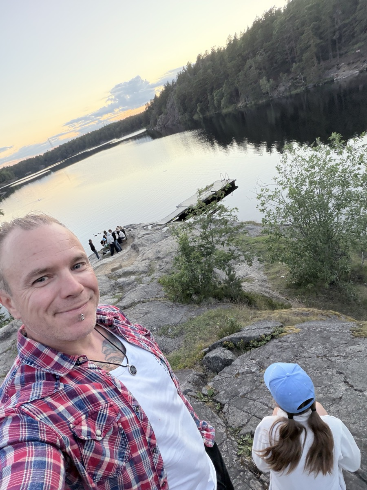
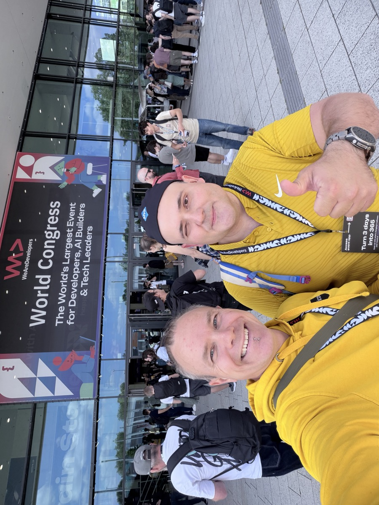

👋 Hello! I'm Miska Braun — a technology enthusiast with a passion for 🌩️ cloud innovation, 🌱 sustainability, and 🌍 connecting with people across borders and cultures.
This website — or my online wall — is a personal portfolio showcasing my professional journey, interests, and growth. Head over to the CV/Professional section to dive deeper into my background and experience.
I strongly believe in the power of combining technology 🤖 with people 🧑🤝🧑 to make a real difference.
In the Freetime section, you'll find things that matter to me — some tech-driven, some purely human, and all driven by ❤️ passion and time.
Want to get in touch? Reach out via LinkedIn — I'd love to connect!
"Cut the crap and land that fucking plane!" — Captain Sully